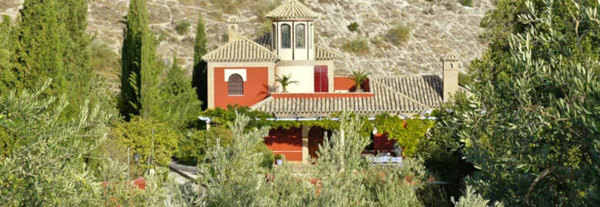
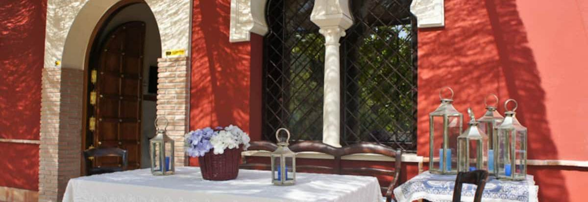
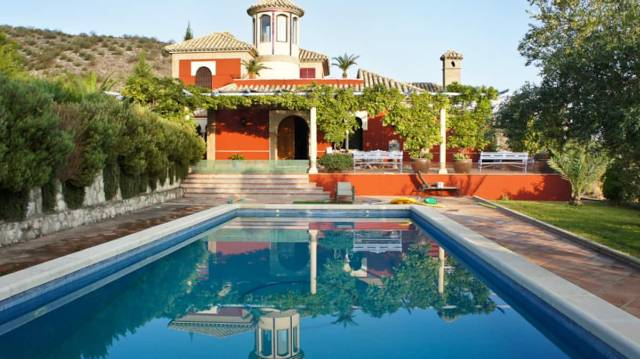
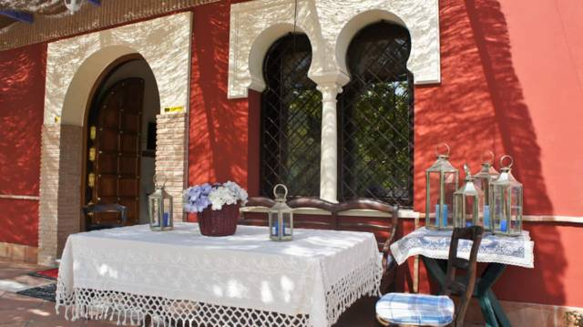
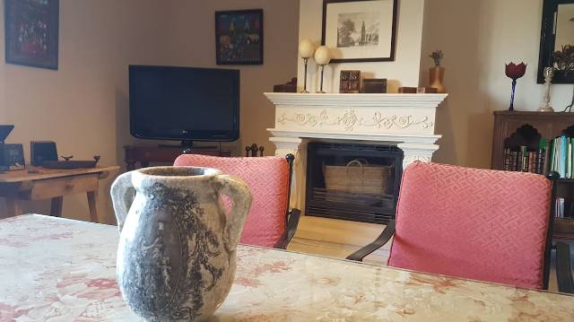
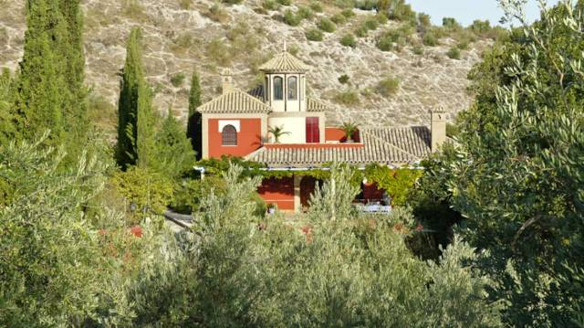

Antes de arrancar
Partida domingo, 16 de agosto, às 09:00. Quatro coisas a confirmar na manhã de domingo, antes de sair de Pinhal Novo.
Checklist de 5 minutos
- Avisar o anfitrião a 1 hora de chegar Ele vem ter connosco a um ponto a 10 min da casa — ver a secção Chegada
- App Tesla instalada e com cartão configurado Vários dos melhores carregadores da rota são Superchargers abertos a outras marcas
- App Zunder, Ionity e Electromaps / ABRP instaladas
- Identificador Via Verde no carro Confirmar se o contrato Leasys inclui
- Documento da DAV / matrícula e autorização da Leasys para circular em Espanha
- Bateria a 100% à saída e pressão dos pneus verificada Asfalto a 50 °C é agressivo
Chegada e casa
Informação do anfitrião. A primeira coisa é a mais importante — não se chega à casa sozinho.
A casa já tem
- Lençóis e toalhas
- Gel de banho e sabonete de mãosSó para os primeiros dias — repor depois
- Papel higiénicoTambém só para os primeiros dias
- Máquina de café italianaCafeteira de pressão, para o fogão
- Máquina de café de cápsulas
- Churrasqueira a carvão
- Máquina de lavar louça
Levar ou comprar à chegada
- Cápsulas de café Perguntar ao anfitrião qual é o sistema antes de comprar — Nespresso, Dolce Gusto e Delta não são compatíveis entre si
- Café moído para a máquina italiana Moagem para cafeteira, não expresso fino
- Carvão e acendalhas para o churrasco
- Pastilhas para a máquina de lavar louça + abrilhantador e sal
- Papel higiénico e gel de banho para o resto da semana Só há para os primeiros dias
- Sacos do lixo
Três rotas até Baena
Badajoz e Mérida já conhecem — por isso a rota clássica desce para terceiro lugar e as duas primeiras passam por sítios novos.
Rota 1 · Algarve & Huelva
- 95% em autoestrada — o percurso mais descansado, com criança a bordo
- A22 é gratuita desde 1 de janeiro de 2025 — as portagens do Algarve acabaram
- A melhor rede de carregamento das três: Alcácer 400 kW, Almodôvar Ionity, Tesla em Loulé e Tesla Benacazón mesmo em cima da A-49
- Paisagem e paragens novas: Ayamonte, Huelva e os Lugares Colombinos (La Rábida, Palos, Moguer)
- Em Espanha, zero portagens (A-49 e A-4 são autovías gratuitas)
- É a mais longa: ~85 km a mais do que a rota do Alentejo
- Passa perto do perímetro do incêndio de Niebla — confirmar a A-49 na DGT
- Domingo de manhã no sentido sul é tranquilo — o aperto é no sentido norte, à tarde
Rota 2 · Alentejo & Serra de Aracena
- A mais curta em km e a mais bonita — atravessa a Sierra de Aracena, Reserva da Biosfera
- Aracena é a melhor paragem de todas as rotas: a Gruta de las Maravillas é fresca e encanta uma criança de 6 anos
- A ~700 m de altitude, a serra é vários graus mais fresca do que a campiña
- Jabugo, Almonaster la Real, Cortegana e Galaroza mesmo em cima da estrada
- Sem carregamento rápido fiável entre Beja e Sevilha (~160 km) — tem de sair de Aljustrel bem carregado
- O IP8 não é todo autoestrada: de Beja a Ficalho é a N-260, 1x1, e atravessa Serpa
- A N-433 espanhola é sinuosa, com camiões e sinistralidade relevante — ~2h para 160 km
- El Madroño, na zona da N-433, esteve afetado pelo incêndio
Rota 3 · Clássica por Badajoz e Mérida
- De longe a melhor rede de carregamento: Estremoz (Ionity 350 kW) e sobretudo Mérida — Zunder 360 kW com 16 tomadas, dois Superchargers Tesla de 250 kW e um Ionity 350 kW
- Autoestrada praticamente do princípio ao fim
- Se quiserem uma novidade nesta rota, Zafra ("Sevilla la Chica") é uma paragem de 2h que não conhecem: Alcázar dos Duques de Feria, hoje Parador, com pátio de mármore
- Badajoz e Mérida já conhecem — o principal atrativo da rota deixa de contar
- A mais longa das três e a que atravessa a Extremadura no pico do calor
- Portagens portuguesas mais caras: ~17,00–17,50 € só até ao Caia
- Zafra tem carregamento fraco — se carregar, carregar em Mérida
Plano de carregamento
O e-3008 aceita cerca de 160 kW em corrente contínua. Com 38–40 °C, contar com 20–30% mais consumo e potência de carga reduzida no fim da curva.
Rota 1 · Algarve
- Alcácer do Sal (A2) — hub Galp até 400 kW
- Almodôvar (A2, km 193) — Ionity até 350 kW
- ou Loulé / Alcantarilha — Tesla Supercharger 150–250 kW
- Benacazón (A-49, 25 km a oeste de Sevilha) — Tesla, mesmo em cima da rota
- Córdoba ou La Carlota antes de descer para Baena
Rota 2 · Aracena
- Aljustrel (A2, km 148) — Galp/Via Verde até 400 kW. Carregar a fundo aqui.
- Atravessar Ficalho e a N-433 sem carregar — 160 km sem posto fiável
- Sevilha — Zunder Alcalá de Guadaíra 360 kW (saída para a A-4) ou Bormujos 360 kW
- Córdoba — Tesla Supercharger 250 kW, se precisar
Rota 3 · Badajoz / Mérida
- Estremoz (A6) — Ionity/Cepsa até 350 kW, 24h
- Mérida — Zunder 360 kW (16 tomadas), Tesla 250 kW ×2, Ionity 350 kW. O melhor hub de toda a viagem
- Saltar Zafra (fraco); se necessário, Zunder em Monesterio
- Sevilha — Zunder Alcalá de Guadaíra 360 kW
- Córdoba — Tesla 250 kW
Portagens
- A22 Via do Infante (Algarve)Gratuita desde 2025
- A2 Lisboa → Algarve completo≈ 23,80 €
- A2/A6 Pinhal Novo → Caia≈ 17,00–17,50 €
- Espanha (A-49, A-4, A-5, A-66, A-45)Todas gratuitas

Previsão do tempo em Baena
AEMET, boletim de 15/08. Cobertura oficial até dia 21; os dias 22 e 23 são só tendência de modelo (±3 °C). Deslize para ver os oito dias.
Pinhal Novo nos dias de viagem
- Sáb 15 (partida)31,5 °C · sem chuva · UV 7,5
- Dom 23 (regresso)*~29 °C · 11% chuva
Passeios a partir de Baena
Distâncias e tempos aproximados, de carro, a partir do centro de Baena. Toque num ponto do mapa ou num cartão para abrir.
Até 40 km · saídas de meio dia
Zuheros 13 km · 16 min
Cueva de los Murciélagos — gruta com arte rupestre neolítica, interior a 14–17 °C. O melhor plano para um dia de 38 °C. Reserva obrigatória: turismo@zuheros.es ou 957 69 45 45. Verão: qua a dom, às 11h00, 12h30 e 17h30. 8 € adulto, 6,50 € dos 6 aos 12 anos.
Atenção com crianças: o percurso tem 415 m e cerca de 700 degraus, até 65 m de profundidade. Uma criança de 6 anos ativa consegue, mas é exigente. Levar casaco.
Também: castelo de Zuheros no penhasco, museu arqueológico e uma das aldeias brancas mais bonitas de Espanha. Feira da Virgen de los Remedios, 12–16 de agosto.
Luque e a Via Verde 9 km · 12 min
Antiga linha do "comboio do azeite" convertida em percurso plano, sem trânsito, com túneis iluminados e viadutos. O melhor passeio local com uma criança de 6 anos. Troço Doña Mencía → Zuheros → Luque, ~13 km, com antigas estações transformadas em restaurantes.
Aluguer de bicicletas com cadeiras e atrelados no Centro Cicloturista Subbética, em Doña Mencía (13 km). Reservar em agosto. Fazer ao amanhecer ou depois das 19h.
Cabra · Fuente del Río 26 km · 29 min
Parque de la Fuente del Río — nascente, ribeira, sombra de plátanos, zona de merendas. Gratuito, e é o plano "fresco" mais simples e mais barato de toda a comarca.
Subindo 13 km de estrada de montanha, o Santuário da Virgen de la Sierra a 1 200 m — vários graus mais fresco e com vista imensa. Também o museu "Cabra Jurásica", geoparque UNESCO.
Priego de Córdoba 31 km · 34 min
Fuente del Rey — 139 bicas de água, monumental. As crianças brincam à volta e refresca de verdade. O Barrio de la Villa é um labirinto branco cheio de flores, e o Balcón del Adarve tem a melhor vista da Subbética. Sem reserva.
Torreparedones 26 km · 38 min
Cidade ibero-romana escavada no próprio concelho de Baena: fórum, termas, muralhas e santuário ibérico. Visitas guiadas normalmente aos fins de semana e feriados, 10h00–12h30, com reserva em torreparedones.es.
Sem sombra nenhuma — só de manhã cedo. Há veladas astronómicas de verão, que são o plano ideal com crianças: à noite e fresco.
Castro del Río · Espejo · Doña Mencía 13–26 km
Três paragens curtas de 1 a 2 horas, todas na Ruta del Califato. Castro del Río tem o casco amuralhado e a antiga prisão onde a tradição diz ter estado Cervantes; Espejo tem o castelo dos Duques de Osuna no alto da colina; Doña Mencía é a base da Via Verde e das adegas Montilla-Moriles.
40 a 100 km · saídas de um dia
Córdoba 62 km · 47 min
Mesquita-Catedral — imprescindível. Verão: seg–sáb 10h–19h; dom 08h30–11h30 e 15h–19h. 15 € adulto, 8 € dos 10 aos 14, grátis até aos 9 anos. Entrada gratuita de seg a sáb, das 08h30 às 09h30 (visita individual, em silêncio). Comprar online.
Alcázar de los Reyes Cristianos — jardins cheios de água, ótimo com criança. Também o Zoo de Córdoba e o Jardim Botânico.
Medina Azahara (69 km) — cidade palatina califal. Verão: ter–sáb 09h–14h e 19h–24h (visitas nocturnas). Lançadeira obrigatória, ~2,50–3 €.
Estratégia de calor: Córdoba passa dos 40 °C em agosto. Chegar às 8h30, ver a Mesquita na hora gratuita, almoçar e sair — ou fazer só a visita nocturna "El Alma de Córdoba".
Lago de Iznájar · praia de Valdearenas 62 km · 1 h
É "o mar" da província de Córdoba. Praia de areia no maior embalse da Andaluzia, com zona balnear, chuveiros, bar e sombras. Entrada de água suave — perfeita para os mais pequenos.
Aluguer de caiaques e paddle surf (reservar ao fim de semana). A aldeia de Iznájar no alto tem castelo, o Patio de las Comedias e dos melhores miradouros da Andaluzia.
Sombra natural é escassa: levar chapéu de sol / toldo.
Rute · Museu do Chocolate 50 km · 52 min
Esculturas gigantes de chocolate, num espaço interior e climatizado. O plano de calor mais garantido com uma criança de 6 anos. Na mesma vila, o Museu do Anis (destilaria histórica), o do Presunto e o do Azeite, e o miradouro sobre o embalse de Iznájar.
Almedinilla · FESTUM romano 40 km · 41 min
Jornadas Iberorromanas, 12 a 16 de agosto — mesmo no início da estadia. Cardo Romano com tabernas e oficinas de artesanato, combates de gladiadores no dia 16 de manhã, e "Ludi Romani" a 15 de agosto: oficinas infantis gratuitas de mosaico e cerâmica ibérica.
Fora do festival: Villa Romana de El Ruedo e o poblado íbero do Cerro de la Cruz. Os banquetes romanos exigem reserva (45–65 €).
Alcalá la Real · Fortaleza de la Mota 49 km · 38 min
Enorme conjunto amuralhado com igreja abacial e cidade medieval escavada. Tem a experiência infantil "Marco Topo", um jogo de pistas pela cidade feito para crianças — muda completamente a visita com crianças. Pouca sombra: ir cedo.
Jaén · Banhos Árabes 66 km · 51 min
Os maiores banhos árabes de Espanha, subterrâneos e frescos — outro bom plano de calor. Mais o Castillo de Santa Catalina, com vista sobre o mar de oliveiras, e a catedral renascentista de Vandelvira.
Antequera · dólmenes e El Torcal 86 km · 1 h 15
Dólmenes de Menga, Viera e El Romeral — Património Mundial UNESCO, entrada gratuita para cidadãos da UE.
El Torcal (102 km) — labirinto de rochas cársicas a 1 200 m, tipicamente 6 a 8 °C mais fresco. Entrada gratuita; a "ruta verde" tem só 1,5 km e é acessível a uma criança, mas o piso é irregular: calçado fechado obrigatório. Em dias de grande afluência há lançadeira (~2 €).
Real Feria de Agosto, 19 a 23 de agosto: dia 19 é dia infantil com preços reduzidos nas atrações e "horas sem ruído" das 20h30 às 22h30.
Aquasierra · parque aquático mais próximo 84 km · 1 h
Villafranca de Córdoba. Aberto todos os dias das 11h30 às 20h00 até 31 de agosto. Tarifas por altura. Tel. 957 190 699.
100 a 200 km · dia inteiro ou dormida
Granada · Alhambra 103 km · 1 h 35
Reserva crítica. Só em tickets.alhambra-patronato.es. Agosto esgota com semanas de antecedência — se ainda não têm bilhete, verificar hoje. 22,27 € geral; menores de 12 anos entram grátis, mas o bilhete tem de ser emitido no mesmo momento que os dos adultos. Bilhetes nominativos: levar documentos de identificação de todos.
Os jardins do Generalife, cheios de água, são a melhor parte com uma criança. Visita completa ~3h a pé. Há visita nocturna dos Palácios Nazaríes, ter–sáb 22h–23h30, 12,73 €.
Nerja · gruta + praia 188 km · 2 h 20
A melhor combinação para um dia de calor extremo: a Cueva de Nerja de manhã (passadiço amplo, muito mais fácil que a de Zuheros — verão 09h30–19h00, todos os dias, comprar online) e a praia de Burriana à tarde. Frigiliana, aldeia branca, a 10 minutos.
Setenil de las Bodegas & Ronda 153–164 km · 2 h 20–2 h 30
Setenil — casas escavadas debaixo da rocha, com o penhasco a servir de telhado. Visualmente mágico para uma criança e com sombra natural. Ronda, a 20 minutos, tem o Puente Nuevo sobre o Tajo de 100 m e a praça de touros mais antiga de Espanha.
São o portal da Ruta de los Pueblos Blancos. Só compensa com uma dormida.
Málaga 129 km · 1 h 45
Alcazaba, Teatro Romano e Gibralfaro; Museu Picasso e Centre Pompidou (interiores climatizados); praia da Malagueta.
Feria de Málaga, 15 a 22 de agosto. A feira de dia, no centro histórico das ~12h às 18h, é gratuita e muito animada — mais adequada a crianças do que a feira de noite. Nota: a cidade enche, estacionar é difícil.
Sevilha · Isla Mágica 183 km · 2 h 15
Isla Mágica + Agua Mágica — parque temático e parque aquático, ideal para 6 anos. O Real Alcázar esgota em agosto: comprar online. A Plaza de España tem barcos a remos no canal, que as crianças adoram.
Aviso: Sevilha em agosto chega aos 42–44 °C. Ou parque aquático, ou cidade em modo nocturno.
Sierra de Cazorla · rio Borosa 165–186 km · 2 h 15–2 h 50
Trilho junto à água com passadiços sobre o rio (o troço até à Cerrada de Elías, ~4 km, é o ideal com crianças), o Parque Cinegético do Collado del Almendral para ver veados e cabras montesas, e a nascente do Guadalquivir. Dia inteiro, idealmente com uma dormida. Verificar restrições por risco de incêndio.
Caminito del Rey 126 km · 2 h Proibido
Não é possível com crianças: o regulamento oficial proíbe o acesso a menores de 8 anos. Sem exceções.
Alternativa na mesma zona: os embalses de El Chorro e Ardales — a Playa de Ardales, no Embalse del Conde de Guadalhorce, tem zona balnear de água doce com sombra de pinhal.
Festas durante a estadia
Em Andaluzia, as ferias só ganham vida depois das 21h — e é a melhor forma de sair de casa sem apanhar 38 °C.
| Festa | Datas | Distância |
|---|---|---|
| Zuheros · Feria da Virgen de los Remedios Chegam ao último dia — encerra às 22h15 | 13–16 ago | 13 km |
| Almedinilla · FESTUM, jornadas iberorromanas Último dia — peça de encerramento às 21h30 | 12–16 ago | 45 km |
| Carcabuey · Feria Real Ainda apanham domingo e segunda | 14–17 ago | 33 km |
| Málaga · Feria Feira de dia no centro, gratuita, melhor com crianças | 15–22 ago | 129 km |
| Antequera · Real Feria de Agosto Dia 19 é dia infantil; este ano com drones em vez de fogo de artifício | 19–23 ago | 86 km |
| Luque · Feria de San Bartolomé Começa no dia do regresso — não chegam a apanhar | 23–28 ago | 15 km |

Mala do Victor
Nove dias, 30 a 38 °C de dia e noites entre 17 e 23 °C. Toque para riscar.
🔴 Não pode faltar
- Garrafas de gin Bem calçadas na mala, longe do sol direto — o porta-bagagens a 50 °C estraga o gin. Dentro da UE não há limite para uso pessoal.
- Cartão de cidadão / passaporte (Victor)
- Carta de condução
- Documentos do carro + autorização Leasys para circular em Espanha Contrato, seguro e o número de assistência em viagem
- Cartão Europeu de Seguro de Doença (o teu e o da Beatriz) Dá acesso ao serviço público de saúde espanhol. Pede-se online na Segurança Social Direta, é gratuito.
- Cartões bancários + algum dinheiro em numerário Muitas piscinas municipais, bares de aldeia e o parque de Iznájar ainda são só a dinheiro
- Reserva do alojamento offline + contacto do anfitrião
⚡ Se o carro for elétrico
- Cabo Type 2 (modo 3) Essencial: em Baena só há AC lento. Sem cabo, não se carrega.
- Cabo de emergência schuko, se o carro trouxer
- Cartões RFID de carregamento (MOBI.E, Galp, Iberdrola…)
- Apps instaladas e com pagamento: Tesla, Zunder, Ionity, Electromaps, ABRP Vários dos melhores postos da rota são Superchargers abertos a outras marcas
- Adaptador de tomada / extensão, para carregar de noite no alojamento
🚗 Obrigatório em Espanha
- Colete refletor e triângulo de sinalização
- Pressão dos pneus verificada antes de sair Asfalto a 50 °C é agressivo
👕 Roupa · 9 dias
- 7 a 8 t-shirts / polos leves, algodão ou linho
- 2 a 3 calções + 1 par de calças leves Para jantares e para as ferias à noite
- 1 camisa de manga comprida leve Protege do sol melhor do que protetor, em Torreparedones ou no Torcal
- Casaco fino ou fleece Mesmo em agosto: a gruta de Zuheros está a 14–17 °C, e a partir de dia 20 as noites descem a 17 °C
- 2 fatos ou calções de banho
- Roupa interior e meias para 9 dias
- Pijama leve
- Ténis ou sapato fechado Obrigatório em El Torcal e recomendado nas grutas e em Torreparedones
- Sandálias + chinelos de piscina
- Chapéu ou boné e óculos de sol
🧴 Saúde e higiene
- Repelente de insetos Com DEET ou icaridina. As noites de janela aberta e o embalse de Iznájar pedem-no.
- Protetor solar 50+ — pelo menos dois frascos Com UV 8–9 gasta-se muito mais depressa do que se pensa
- After-sun ou creme com aloé
- Medicação habitual, para 9 dias + margem
- Analgésico, antipirético, anti-histamínico, sais de reidratação Os sais de reidratação valem ouro num dia de 38 °C
- Pensos rápidos, desinfetante, pinça Para carraças, se forem ao campo ou à serra
- Creme para picadas / after-bite
- Necessaire habitual e champô A casa tem gel de banho e sabonete de mãos, mas só para os primeiros dias
- Toalha de praia grande × 2 As toalhas de banho são fornecidas pela casa
🔌 Tecnologia
- Carregadores de telemóvel + cabos a mais
- Powerbank Dias longos fora com GPS e apps a consumir bateria
- Suporte de telemóvel para o carro + carregador de isqueiro
- Máquina fotográfica e cartões
- Coluna bluetooth pequena
- Mapas offline do Google Maps para a Andaluzia A serra da Subbética tem zonas sem rede
🚙 Para a viagem em si
- Água — várias garrafas grandes, e uma arca térmica pequena Não é opcional a 38 °C. Uma avaria sem sombra às 15h é perigosa.
- Fruta, frutos secos e snacks para o carro
- Guarda-sol para o para-brisas e sombreadores laterais Os laterais são para quem vai atrás — o sol de lado em 6 horas de estrada é brutal
- Toalhitas e sacos do lixo para o carro
- Saco de compras dobrável
- Rolo de papel de cozinha
💡 Talvez não seja preciso, mas se couber…
- Ventoinha USB pequena ou de secretária Se o alojamento só tiver ar condicionado na sala, salva as quatro primeiras noites tropicais
- Mosquiteiro ou difusor anti-mosquitos
- Lanterna frontal Para as veladas astronómicas em Torreparedones
- Binóculos Laguna de Zóñar, Cazorla, ou só as vistas do Balcón del Adarve
- Toalha de microfibra que seca depressa
- Termos ou garrafa isotérmica
- Corda de estender / molas Com este calor, a roupa seca em duas horas
- Detergente de roupa em cápsulas
- Ficha múltipla / extensão pequena
- Livro ou e-reader, para as horas de sesta forçada entre as 14h e as 18h
- Baralho de cartas ou um jogo pequeno
- Saco de roupa suja separado
- Um garrafão de 5 L de água no carro Reserva, e serve para lavar pés cheios de areia à saída de Iznájar
Mala da Beatriz · 6 anos
Nove dias de sol forte, piscina e lago. A prioridade é sol, água e conforto no carro.
🔴 A tratar já — pedir à mãe
- Passaporte da Beatriz Pedir à mãe. Confirmar que está válido.
- Cartão de cidadão da Beatriz Pedir à mãe. Nominativo e necessário para os bilhetes da Alhambra.
- Autorização de viagem assinada pela mãe Autoriza a saída do país acompanhada só por ti. Nem sempre é pedida dentro do espaço Schengen, mas se for e não existir é um problema sério — idealmente com assinatura reconhecida.
- Cartão Europeu de Seguro de Doença da Beatriz
- Contactos de dois adultos escritos em papel, na mochila dela Caso se separem numa feira ou num monumento cheio
- Boletim de vacinas ou número de utente, em foto no telemóvel
- Medicação dela, com a posologia escrita
🏊 Piscina e lago
- Bóia de piscina Vai dar muito uso: piscinas municipais, praia de Valdearenas em Iznájar, Aquasierra. Se for insuflável grande, levar a bomba.
- Braçadeiras ou colete de flutuação Mais seguro que a bóia em água aberta — no embalse de Iznájar o fundo desce
- 3 fatos de banho Com piscina todos os dias, dois nunca chegam
- Fato de banho com proteção UV / t-shirt de licra Com UV 9, é a melhor proteção que existe para ombros e costas
- Óculos de natação
- Toalha de praia + poncho-toalha com capuz O poncho é ótimo para trocar de roupa à beira do lago
- Chinelos de piscina / sapatilhas de água O chão do lago tem pedras e o piso das piscinas queima
- Baldes e pás Valdearenas é praia de areia a sério
- Saco impermeável para a roupa molhada
👗 Roupa
- 8 a 9 t-shirts leves + 2 de manga comprida fina A de manga comprida é proteção solar, não é frio
- 5 calções + 3 vestidos ou saias leves
- 1 par de calças ou leggings Para a gruta e para as noites a partir de dia 20
- Casaco / camisola Indispensável na Cueva de los Murciélagos (14–17 °C) e no Torcal
- Roupa interior para 9 dias + 2 pijamas leves
- Ténis fechados Obrigatórios em El Torcal, e muito melhores nos 700 degraus da gruta de Zuheros
- Sandálias confortáveis + chinelos
- Chapéu de abas largas — melhor que boné Protege orelhas e nuca
- Óculos de sol de criança
- Uma muda "de sair" para as ferias à noite
🧴 Saúde e cuidado
- Repelente próprio para crianças Fórmula infantil, não a de adulto — concentração adequada à idade. Aplicar ao fim da tarde.
- Protetor solar 50+ infantil, dois frascos Reaplicar de duas em duas horas e sempre depois da água. Com UV 9 a pele queima em 10 minutos.
- Stick de protetor para cara e lábios
- After-sun infantil / gel de aloé
- Paracetamol e ibuprofeno infantis, na dose certa para a idade
- Sais de reidratação pediátricos A desidratação numa criança pequena com 38 °C instala-se muito depressa
- Creme para picadas, pensos rápidos coloridos
- Termómetro
- Escova de dentes, pasta infantil, escova de cabelo, elásticos
- Toalhitas húmidas — muitas
- Comprimidos para o enjoo do carro, se costumar enjoar A N-433 e as estradas da Subbética são sinuosas
🧸 Conforto e entretenimento
- O peluche / boneco de dormir O único item verdadeiramente insubstituível de toda esta lista
- Almofada de pescoço e uma manta fina para o carro
- Garrafa de água própria, de preferência térmica
- Tablet carregado com filmes descarregados offline + auscultadores infantis
- Livros, livro de atividades, autocolantes
- Lápis de cor e um caderno Um "diário de viagem" ocupa muito tempo de sesta forçada
- Um jogo de tabuleiro pequeno ou cartas
- Mochila pequena só dela, para os passeios
- Snacks de que goste, para o carro e para as filas
- Um brinquedo novo, guardado para o troço mais longo da viagem
Reservas por ordem de urgência
| Local | Reserva | Nota |
|---|---|---|
| Alhambra, Granada | Imprescindível | Só em tickets.alhambra-patronato.es. Agosto esgota. <12 anos grátis mas o bilhete tem de sair junto com os dos adultos. Nominativo. |
| Real Alcázar, Sevilha | Imprescindível | Esgota em agosto |
| Cueva de los Murciélagos, Zuheros | Obrigatória | turismo@zuheros.es · 957 69 45 45 · qua–dom, 11h/12h30/17h30 |
| Mesquita-Catedral, Córdoba | Muito recomendada | Ou usar a entrada gratuita seg–sáb, 08h30–09h30 |
| Cueva de Nerja | Online, mais barato | Verão 09h30–19h00, todos os dias |
| Medina Azahara | Guiadas e nocturnas | Lançadeira obrigatória ~2,50–3 € |
| Torreparedones | Recomendada | torreparedones.es · fins de semana e feriados, 10h–12h30 |
| Bicicletas, Doña Mencía | Recomendada | Centro Cicloturista Subbética · com cadeiras e atrelados |
| Caiaques, Iznájar | Ao fim de semana | Estación Náutica Lago de Andalucía |
Onde vamos ficar · San Marcos




Dados do carro
Veículo
- MatrículaCF-75-IG
- ModeloPeugeot 3008 · 100% elétrico
- VINVR3KCZKZ5TS049606
- Motor7T3R5015104
- Homologação2023100032970195
- NormaEuro 6e-bis · 0 g/km CO₂
- Lugares5
- Peso bruto / tara2 640 kg / 2 183 kg
Documento e proprietário
- DAV n.º2026/00860395
- Data10/03/2026
- AlfândegaPT000305 · Jardim do Tabaco
- ISV0,00 € · Tabela A, 1.º escalão
- ProprietárioLeasys Mobility Portugal S.A.
- NIFPT503188620
- OperadorStellantis Portugal, S.A.